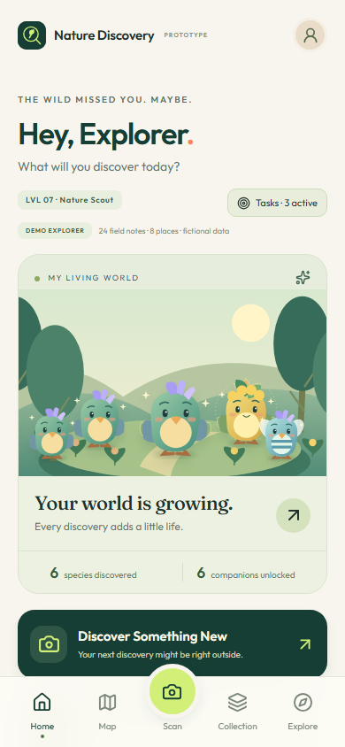
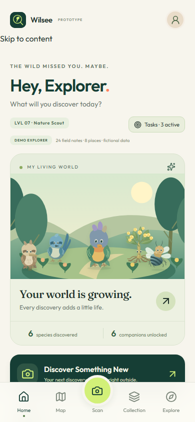
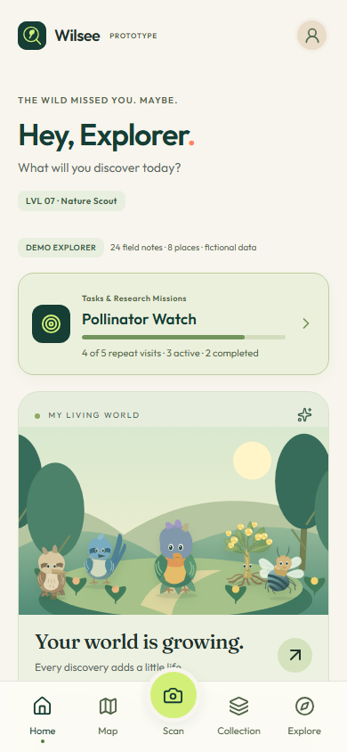
The existing prototype, first revision, second revision and verified final view. Original screenshots are linked at full resolution. Chromium / reduced motion / software WebGL; model renders are actual 3D canvases. These comparisons demonstrate visual changes, not physical phone performance.



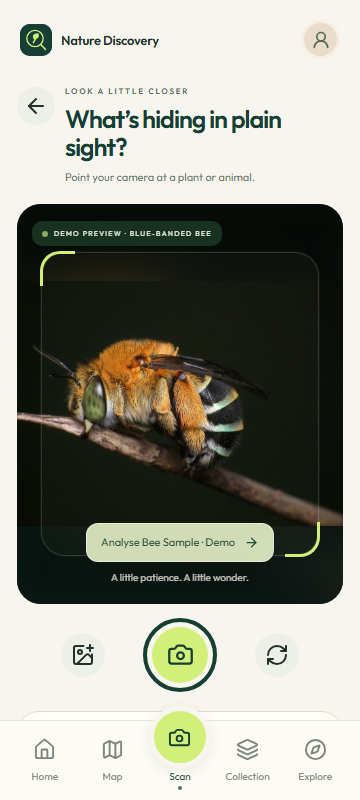
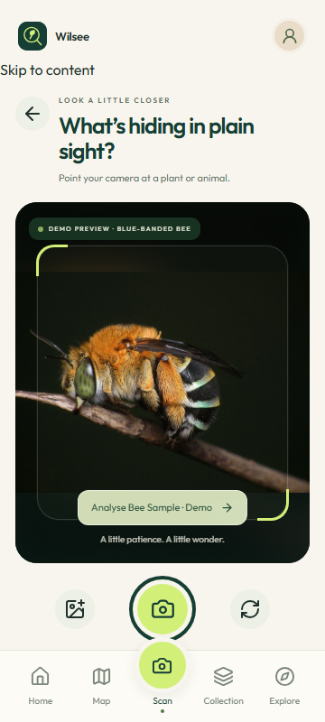
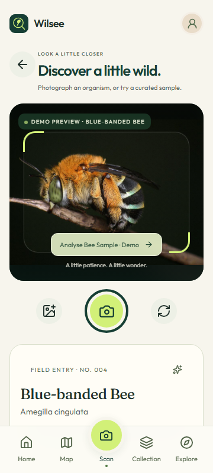

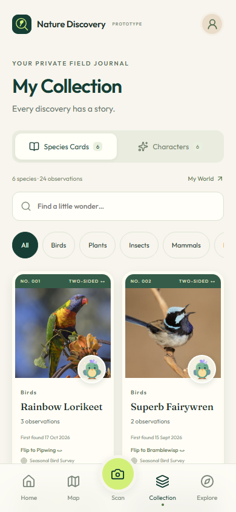
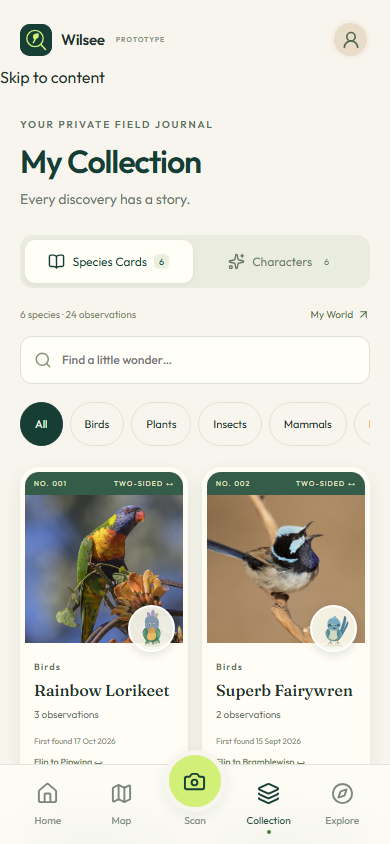
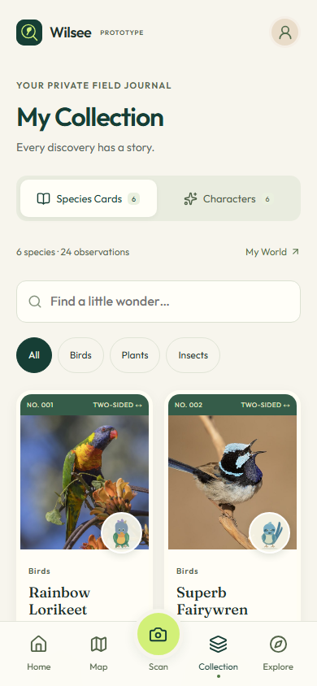
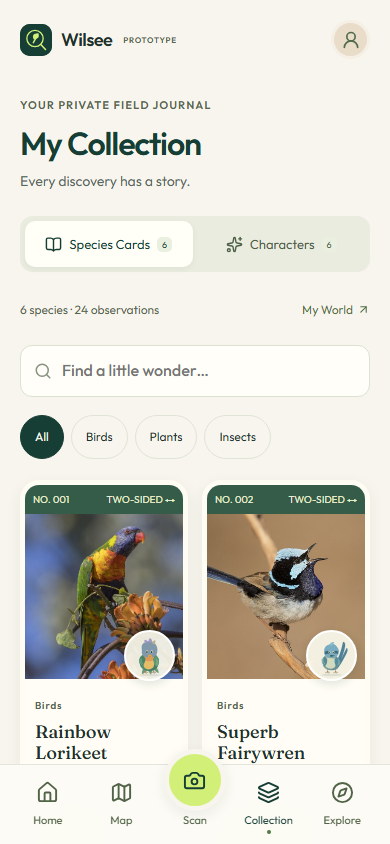
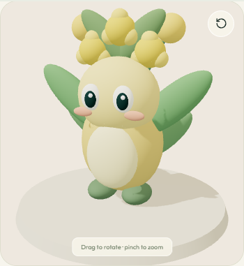
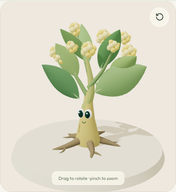
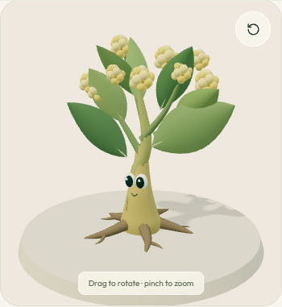

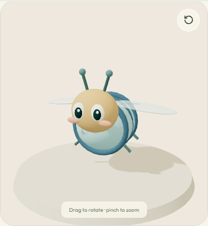
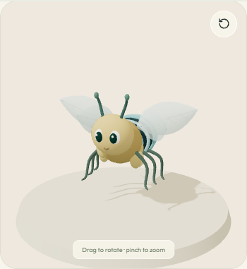
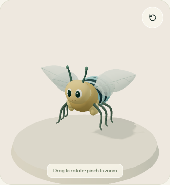
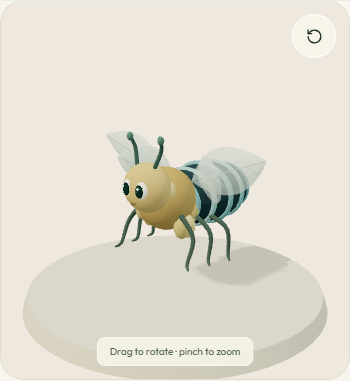
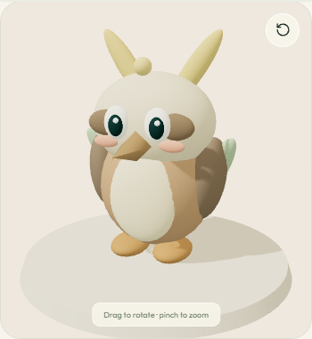
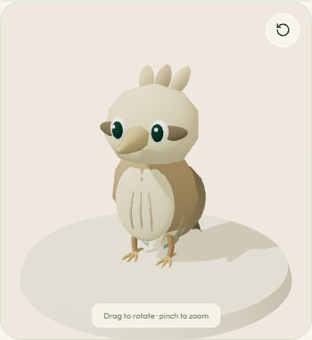
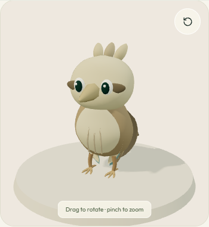
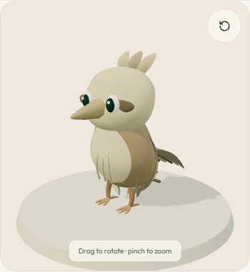
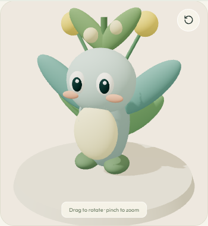
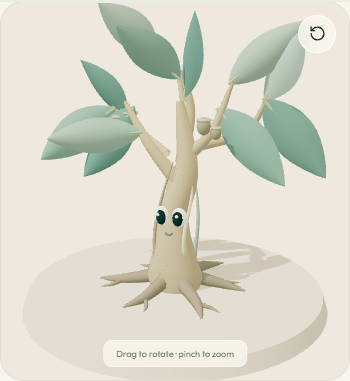

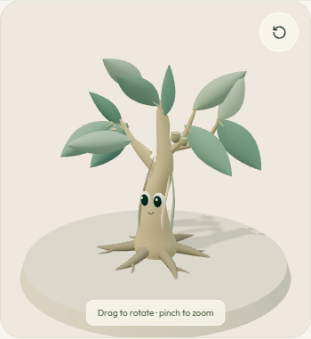
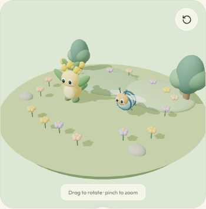
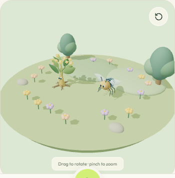
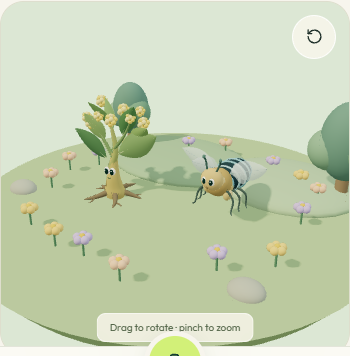